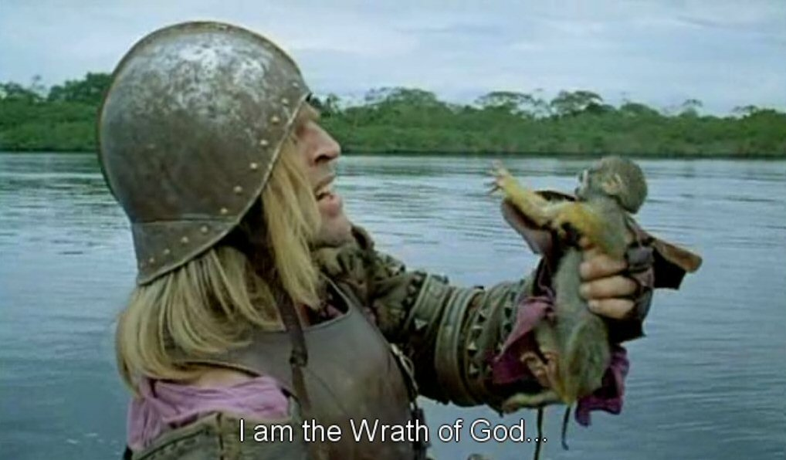

Thursday, December the 20th, 2012
back to: title, date or indexes
A rare coloured hyperrealist mezzotint by the noted hyperrealist mezzotintist Rex Hypertint. It shows Spanish conquistador Lope de Aguirre, “El Loco” (1510–1561), trying desperately to get a signal on his iMonkey during his last, fateful trip down a very big South American river.
